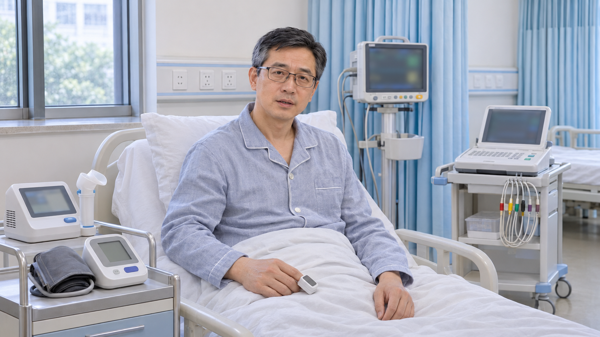

《健康评估》项目五 · 临床推理训练
陈老师的检查资料
——从选择到判断
回顾病例 → 说明查阅依据 → 优先调阅资料 → 课堂交流 → 形成判断 → 核验 AI 建议 → 修订并生成个人档案
床旁设备用于呈现评估情境，并不表示每项检查都需要使用。请根据病例资料，决定优先了解什么。
本网站不需要任何外部账号，使用浏览器打开即可。
本病例与全部检查报告均为教学模拟资料，非真实患者报告，不作为医疗凭证。
登记学习身份
用于生成你的个人学习档案。只有在同一设备、同一浏览器中，才能恢复本地记录；同一学号再次进入会恢复此前的调阅记录与作答。
病例回顾
请先读完病例，再进入资料库。此后随时可点顶部「回看病例」。
本轮任务说明
优先调阅检查资料
资料卡仅显示名称与检查阶段，请结合病例自行判断。
你可以在认为资料足够时提前结束，不必用满三次机会。
课堂交流节点——请按教师要求暂停。
下面内容由你的调阅记录自动生成，不需要重新抄写。暂停期间不能新增调阅、不能提前查看 AI 建议，请先完成课堂交流再继续。
我这轮的记录
⏸
请按教师要求暂停，准备交流自己的选择与发现
请在此暂停，参加课堂交流；教师通知继续后，再点击下方按钮。
AI 介入前的个人分析
不要求给出确定的疾病诊断；尚未获得关键确诊资料时，可以保留「疑似」「仍需验证」等表述。保存后这一版本会作为原始记录保留，不被后续修订覆盖。
我对目前判断的把握程度：*
核验 AI 建议
以下建议可能存在推理疏漏，请结合你掌握的资料核验。
核验、修订与最终判断
允许保留原判断，但需要说明理由；不要求每个人必须修改，也不要求每个人必须反对 AI。
1. 对 AI 建议的回应：*
我的学习档案
以下内容由你的学习记录自动汇总。请核对、生成并下载档案，再到雨课堂提交，教师将在雨课堂查看。
请核对以上内容，确认后生成个人档案。